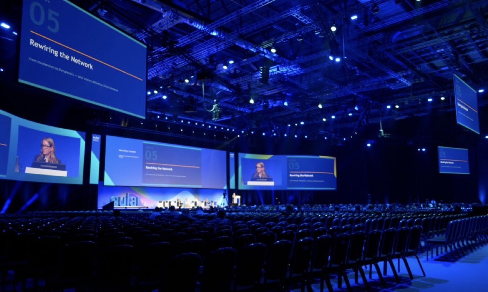
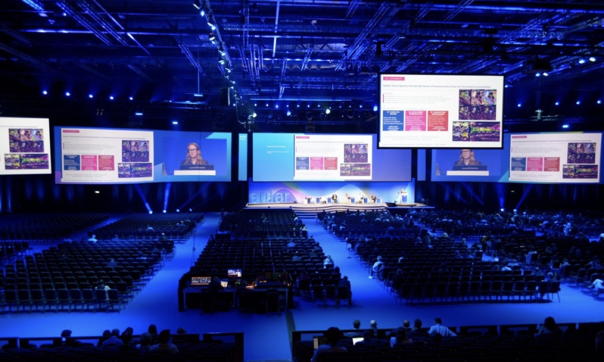
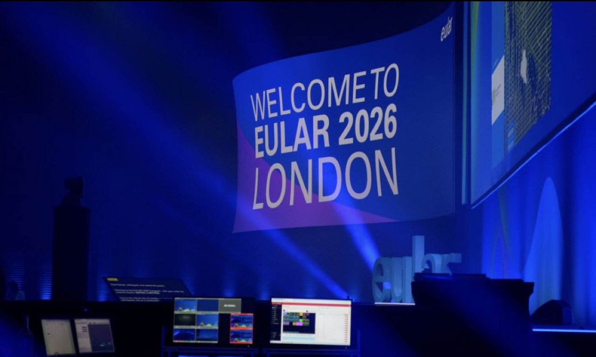

Large international congresses ask more of stage technology than a flat backdrop can deliver. At the EULAR 2026 congress in London, the visual centrepiece of the main stage was a pair of custom-designed curved LED screens arranged in an S-shaped profile — one section sweeping concave, the other convex — so the display read as a single continuous surface across the width of the stage. Asia Vision Technology supplied the LED displays used in the installation.
This case study covers what was deployed, what an S-profile curved configuration demands of the hardware, and how the screens were delivered against a congress date that could not move.
The deployment consisted of two custom curved LED screens forming the stage’s S-shaped centrepiece. Rather than presenting a single flat plane, the two sections met at a change of direction: one side curving inward, the other outward, which gave the stage a changing visual rhythm as cameras moved across it.
The screens carried the congress programme — welcome content on arrival, session titles and speaker support through the scientific sessions, and sponsor content between them. Because the audience is seated at distance and much of the content is captured on camera as well as watched in the room, the displays had to hold up both to the naked eye and to broadcast capture.

A curved stage screen is built from flat cabinets, and the curvature comes from how those cabinets are joined. Asia Vision’s rental range supports this at cabinet level: the Z Series cabinet in a 500 × 500 millimetre format supports ±5° of curving and right-angle splicing, while the ZH touring cabinet — 500 × 1000 × 94 millimetres — supports curving from -7.5° to +7.5°. Stacking cabinet rows at those angles is what produces a semi-concave and semi-convex profile without a visible break between sections.
Four requirements matter most on a congress stage:

The choice came down to hardware that already supports the design, and a delivery schedule that fits a fixed congress date.
Most LED manufacturers can build a flat wall. Curved and right-angle splicing in a rental cabinet is a smaller set of products, and the specification has to be settled before the stage design is locked. Asia Vision’s rental and touring series support the curving an S-profile configuration needs, in standard cabinet formats.
Delivery is the second constraint. Congress dates do not move, and the wall has to be built, shipped, installed and tested ahead of the opening session. Asia Vision works to a 15 to 20 working day lead time with a three-year warranty, and supports temporary installations with remote technical assistance and spare-parts logistics.

What shape were the LED screens at EULAR 2026?
Two custom curved screens arranged in an S-shaped profile, one section semi-concave and one semi-convex, forming the centrepiece of the congress main stage.
Why use curved rather than flat screens?
A curved surface gives a stage changing visual depth as cameras and audience move across it, and lets the display follow the architecture of the set rather than sitting in front of it.
How is a curved LED wall built from flat cabinets?
Each cabinet is set at a small angle to its neighbour. Asia Vision rental cabinets support ±5° per cabinet (Z Series, 500 × 500mm) or -7.5° to +7.5° (ZH Series, 500 × 1000mm), which is enough to build an S-profile across a stage width.
How long does delivery take for an event LED wall?
Asia Vision works to a 15 to 20 working day production lead time, with a three-year warranty and remote technical support for temporary installations.
Congress, conference and event work sits between two requirements: the image quality of a studio installation and the logistics of a touring one. Asia Vision’s range covers both ends.
The Z Series rental cabinet uses flip-chip COB packaging with 3.5× the anti-knock resistance of SMD, a 7680Hz refresh rate for camera work, and a 500 × 500 millimetre cabinet that supports ±5° curving and right-angle splicing. The ZH touring series adds a 500 × 1000 millimetre cabinet with -7.5° to +7.5° curving and wind resistance rated to 20 m/s for outdoor and touring use. For all-platform and rental fleets, the X Series covers indoor and outdoor configurations from a single cabinet ecosystem.
Event and congress organisers also value predictable delivery and support. Asia Vision ships production in 15 to 20 working days, provides a three-year warranty, and backs installations with remote technical support and spare-parts logistics. For a deployment with a fixed date, that reliability is as important as the hardware specification.
Asia Vision Technology is an LED display manufacturer based in Shenzhen, China. Its products are used in events, sports, advertising and corporate applications, with a range spanning indoor fine-pitch and COB displays, rental cabinets and outdoor high-brightness screens.
The product line includes the CV-PRO and COB indoor series with a high contrast ratio for premium indoor work, the Z Series rental cabinet with ±5° curving, and the D-PRO outdoor series with IP65 sealing and high brightness. Pixel pitches span the full range from fine-pitch indoor panels to large outdoor formats.
Asia Vision products carry CE, FCC and RoHS compliance, with UL and ETL listings for the US market, alongside UKCA and GS capability for European buyers. The company provides a 15 to 20 working day lead time and a three-year warranty, supported by remote technical assistance and spare-parts logistics.
For congress organisers, AV integrators and event partners, that combination of certified hardware, reliable delivery and after-sales support is the basis for long-term collaboration on demanding deployments.
For this requirement our range covers it directly: the COB Z rental series (±5° curving, 7680Hz) and the COB ZH touring series (-7.5° to +7.5°, wind-rated).